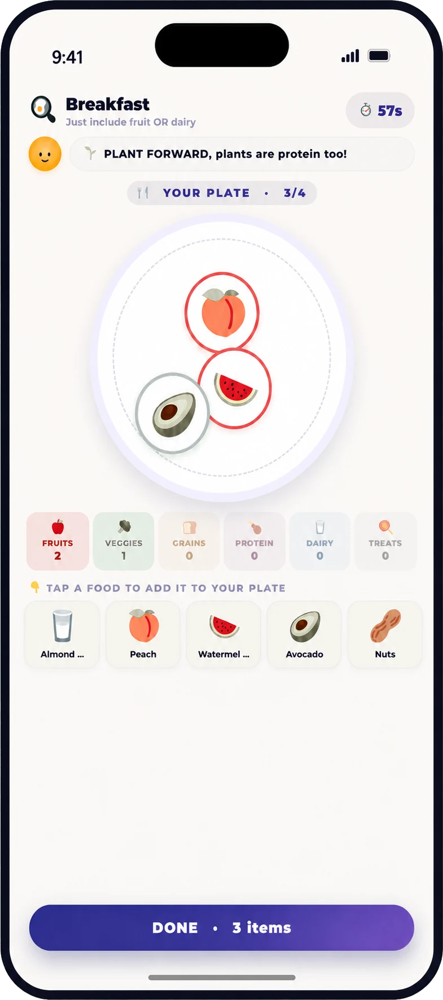

Food games are most useful when they build familiarity and skills—not when they disguise pressure to eat. A child can sort, smell, prepare, describe, or learn about a food without being required to taste or finish it.
Make curiosity the goal. Let children shop, cook, sort, and build meals; avoid weight language and “good food/bad food” labels. Plate Builder is one optional ProudMe activity, not a test of what a child eats.
Educational, not medical advice
Children differ in health, development, ability, sensory needs, and family circumstances. Use this guide for general education and ask your child’s pediatrician about individual needs or safety concerns.
Keep food play low-pressure
The USDA MyPlate guide for families recommends offering variety and involving children in planning, shopping, and preparation. Those are practical learning opportunities. They do not require labeling a child’s intake, body, or appetite as “good” or “bad.”
- Let touching, smelling, describing, or helping count as participation.
- Do not use dessert as payment for eating another food.
- Avoid competition based on how much someone eats.
- Adapt for allergies, culture, budget, sensory needs, and available foods.
12 playful ways to learn about food
- Color detective. Find three colors in the produce section or kitchen and learn their names—no tasting required.
- Food-group sort. Sort food cards or grocery items using MyPlate groups, then discuss foods that combine groups.
- Build-a-meal challenge. Use pictures, toy foods, or ProudMe Plate Builder to make several different meal combinations.
- Texture words. Describe foods as crisp, creamy, chewy, juicy, smooth, or crunchy instead of judging them.
- Grocery mission. Ask the child to find one whole grain, one protein food, or one fruit within a set budget.
- Rainbow tally. Notice colors offered across several days. This is a variety observation, not a daily grade.
- Recipe jobs. Let the child rinse, tear, stir, measure, arrange, or set a timer at an age-appropriate level.
- Mystery scent. Smell familiar herbs, fruits, or spices with eyes closed and guess what they are.
- Restaurant designer. Invent a pretend menu with foods the family knows and one curious new combination.
- Tiny tasting ladder. If the child chooses, progress from looking to touching, smelling, licking, or tasting a tiny piece without requiring the next step.
- Family food story. Ask a relative about a dish, tradition, or ingredient important to the family.
- Snack lab. Combine two or three familiar components and let the child name the texture or flavor they created.
Use language that supports learning
Food does not need a moral label. Talk about variety, taste, function, and context: “This helps us stay full,” “That adds crunch,” or “This is a celebration food our family enjoys.” Avoid commenting on how much another person eats or connecting food choices to earning, burning, or changing a body.
“You don’t have to taste it. Would you like to help rinse it, smell it, put a small piece on the side, or just watch today?”
Know when a game is not the right tool
General food activities are not treatment for feeding disorders, allergies, gastrointestinal symptoms, growth concerns, or intense anxiety around food. Ask a pediatrician or qualified feeding professional when eating is painful, the accepted-food list is shrinking, meals cause significant distress, swallowing or choking is a concern, or growth and nutrition are in question.
Frequently asked questions
Do healthy eating games make picky eaters try foods?
They may build familiarity, but they do not guarantee tasting or acceptance. Keep the activity low-pressure and respect the child’s pace.
Is Plate Builder a nutrition assessment?
No. It is an educational ProudMe game about meal variety, not an assessment of a child’s diet or health.
Should foods be called healthy and unhealthy?
More specific, neutral language is usually more useful. Discuss what foods offer, how they taste, and how different foods fit across time.
Can we adapt the games for allergies or cultural foods?
Yes. Use foods that are safe, accessible, familiar, and meaningful to your family.
Sources and further reading
Explore food variety through play
Choose one manageable action, notice the attempt, and keep the conversation going. ProudMe supports healthy-habit reflection; it does not provide medical care or guarantee behavior change.
